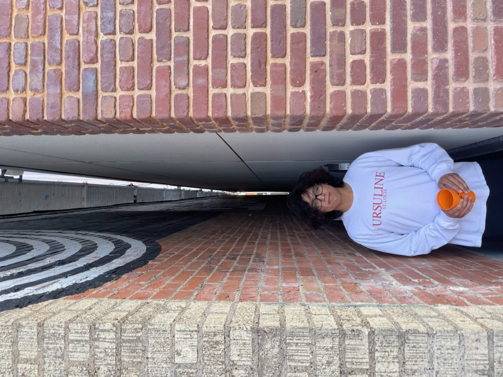

My name is Joseph Strzembosz, I am 19 years old from Guatemala. I was adopted a very young age by 2 loving parents. I found a interest for computers when I met a friend at a summer camp and have played videos games since I was very young. I went to Bishop Dubourg for the first 2 years of high school and graduated from Mehlville highschool in 2021. I love the blues and my dog Molly. I am very interested in learning more about coding and expanding my knowledge .

I secretly got my first job at 16 years old at Buffalo Wild wings. I was a cashier and bus boy and worked there for a little under a year. When I turned 17 my friends had been working at a local country club and asked if I wanted a job as they needed people. I quickly found a love for working in country clubs that was sadly short lived. I worked as a bus boy, pool server, card room server and food runner. As covid was in its prime,I was electrician apprentice for a member at the country club. After doing that for about 8 months I decided to take my talents back to another country club which again was short lived due to management issues. Now I am a fulltime student trying my best to learn.